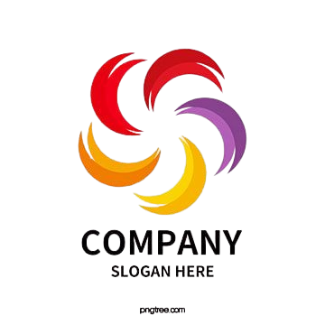

The first wind of the spring, that introduces the fragnance of beauty.
Float Item here
The first wind of the spring, that introduces the fragnance of beauty.
Every faces of Praromvik holds the glory of being a part of the session 2018-2019, the very first guest of the North Bengle DMWTEC campus, besides Corotua River.
View Gallery